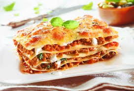

Recipes

Ingredients
- 1 clove garlic
- 1 onion
- 2 carrots
- 500g ground of beef
- 800g canned crushed tomatoes
- 2 tsp dried oregano
- 50g of unsalted butter
- 40g of flour
- 500ml of milk
- 1/4tspcof ground nutmeg
- 150g lasagna noudles
- 60g parmesan cheese
- olive oil
- salt
- pepper
Preparation
-
For the lasagna recipe, peel and finely chop garlic. Peel and dice the
onion and carrots. Heat a little olive oil in a large pan and fry the
onions, carrots and garlic. Add the minced beef and brown evenly, using
a wooden spoon to break it up as you go. Season to taste with salt and
pepper. Then add the chopped tomatoes and season again with salt and
pepper. Cover and simmer over a medium heat for approx. 15–20 min. Stir
in the dried oregano.
-
Preheat the oven for the lasagna to 200°C/390°F fan or 220°C/430°F
top/bottom heat. For the béchamel sauce, melt the butter in a small
saucepan. Add the flour and brown while stirring. Gradually add the cold
milk, stirring constantly, then reduce the heat and cook for approx. 5–8
min. Season to taste with nutmeg, salt and pepper.
-
Cover the base of the casserole dish with olive oil and then with a
layer of béchamel. Now layer the lasagna sheets first, then the
Bolognese and béchamel sauce in succession. Repeat until all the
ingredients have been used up, finishing with béchamel on top.
-
Grate the Parmesan over the last layer, transfer the lasagna to the
preheated oven on the middle shelf and bake for approx. 30–40 min., or
until the top is golden. Serve in the hot oven dish.